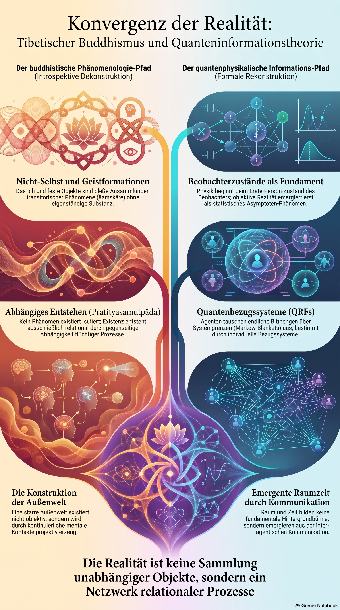
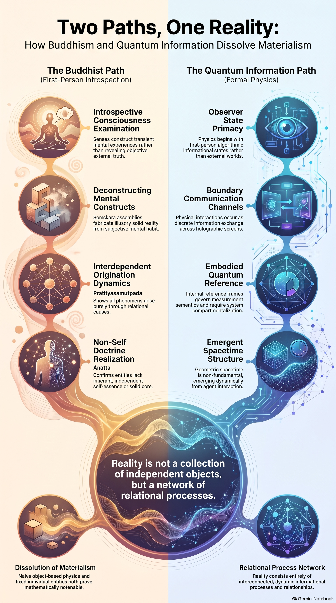
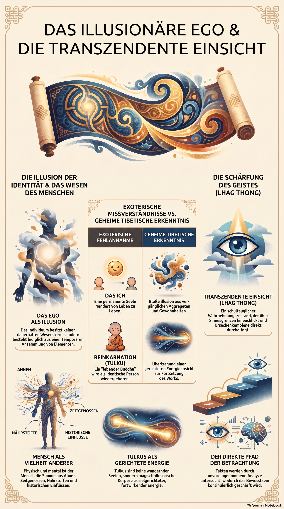
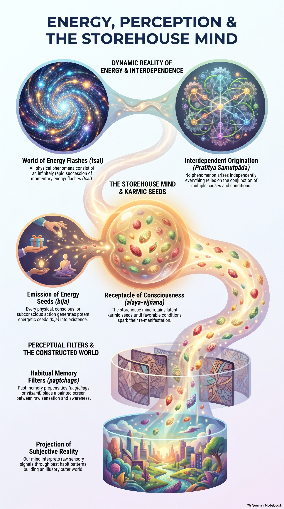
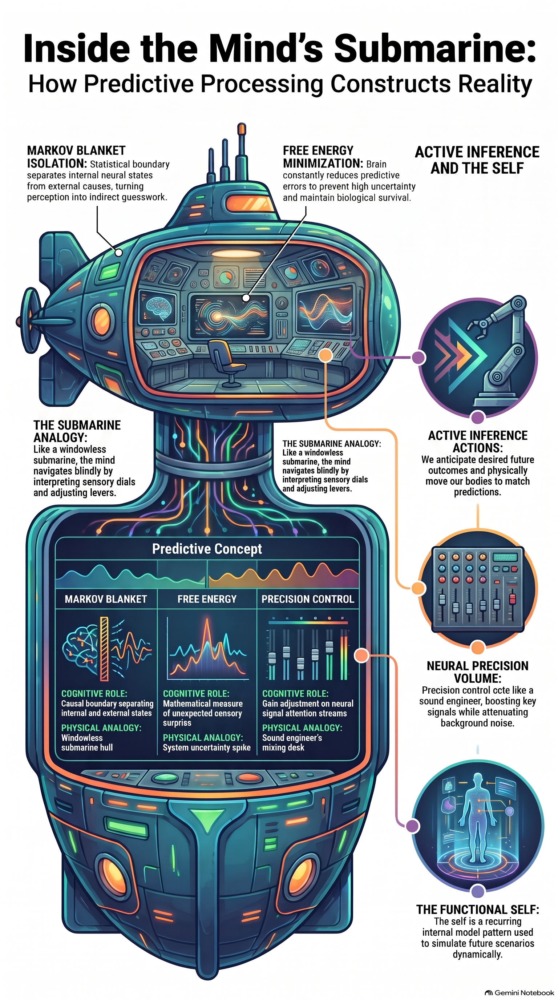
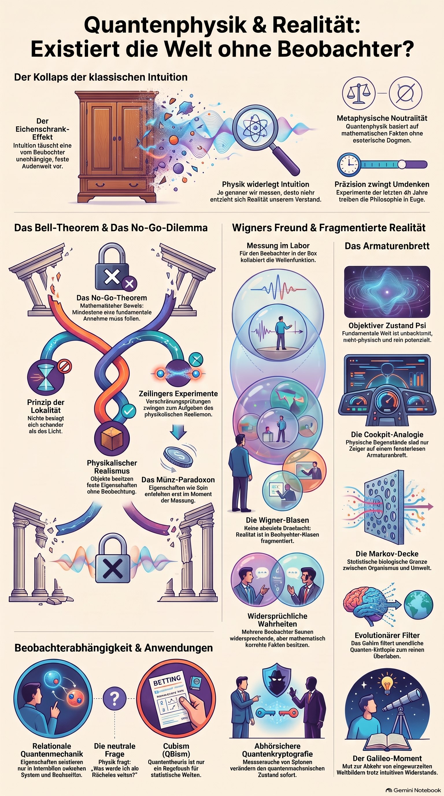
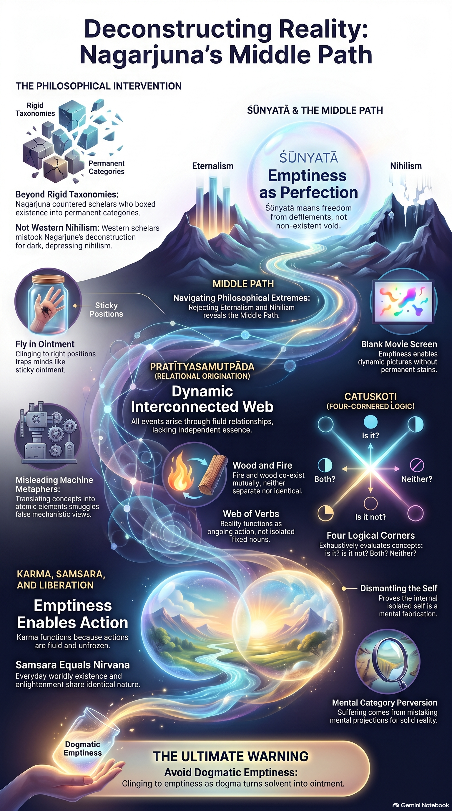
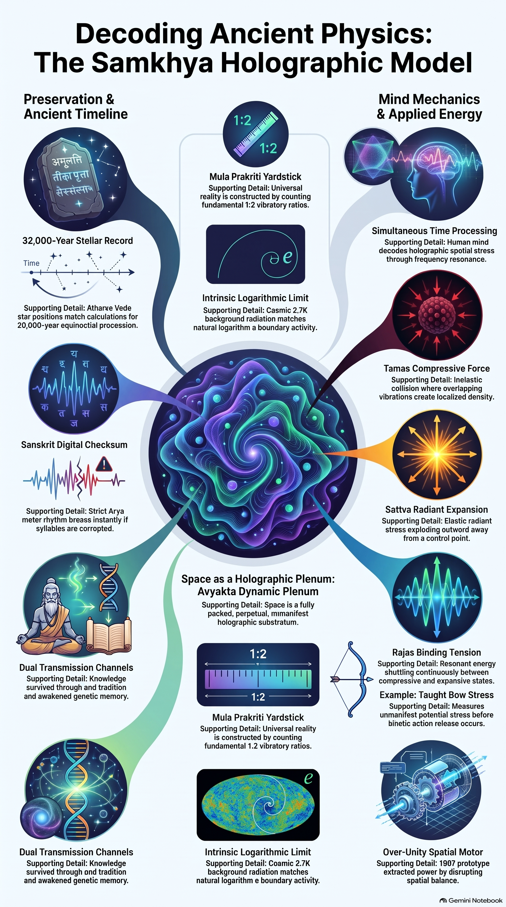
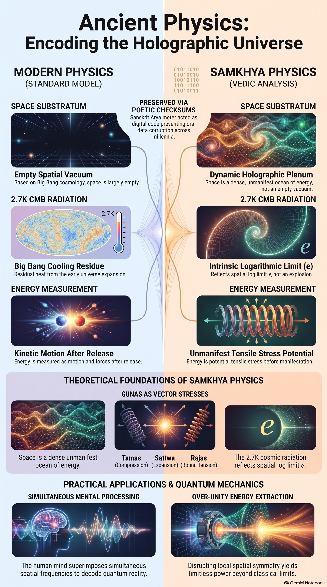
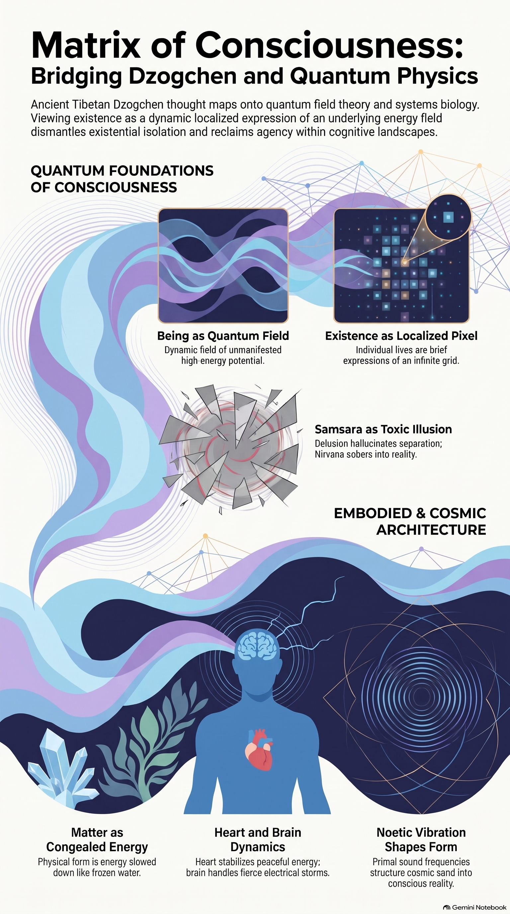

Physics as Information Processing
Was ist Realität, wenn wir sie als Informationsverarbeitung verstehen? Ausgehend von den Arbeiten von Chris Fields und Markus Müller verbindet dieser Vortragskurs die Beobachter-Relativität der Quantenphysik mit der algorithmischen Informationstheorie – und stellt sie in einen direkten Vergleich mit den hier veröffentlichten Secret Oral Teachings des tibetischen Buddhismus: Materie entpuppt sich als stabiles Muster im Austausch von Information, und die Welt als eine Art Benutzeroberfläche – zwei Wege, eine Realität.
Das Gewebe der Realität
PDF-Slides zum Quelltext (Deutsch).
PDF-Slides zum Quelltext – im Browser anzeigen
Infografik anzeigen: „Konvergenz der Realität"

Quellen
- Markus Müller, Law without law: from observer states to physics via algorithmic information theory (Original-Paper; nur als Quelle genannt, nicht zum Download angeboten)
- YouTube-Playlist der Vorlesungsreihe von Chris Fields: „Physics as Information Processing“
What is reality, if we understand it as information processing? Drawing on the work of Chris Fields and Markus Müller, this lecture course connects the observer-relativity of quantum physics with algorithmic information theory – and puts it in direct comparison with the Secret Oral Teachings of Tibetan Buddhism published here: matter turns out to be a stable pattern in the exchange of information, and the world something like a user interface – two paths, one reality.
Quantum physics and Buddhism disprove objective reality
PDF slides for this talk – view in browser
The Relational Universe
PDF slides on the source text (English).
PDF slides on the source text – view in browser
Show infographic: „Two Paths, One Reality"

Sources
- Markus Müller, Law without law: from observer states to physics via algorithmic information theory (original paper; named as source only, not offered for download)
- YouTube playlist of the lecture series by Chris Fields: „Physics as Information Processing“
The Secret Oral Teachings in Tibetan Buddhist Sects
Die geheimen mündlichen Lehren des tibetischen Buddhismus – aufgezeichnet in Alexandra David-Néels Buch The Secret Oral Teachings in Tibetan Buddhist Sects (mit Lama Yongden) – beschreiben das Ich als Illusion: ein Konstrukt aus Wahrnehmung und Gewohnheit. In drei Teilen folgt dieser Vortragskurs ausschließlich der tibetischen Lehre: der Demontage des Ego über die Energie-Natur der Materie bis zur Auflösung des Dualismus – Samsara und Nirvana erscheinen am Ende als zwei Seiten derselben Wirklichkeit.
Warum dein Ich gar nicht existiert
PDF-Slides zum Podcast – im Browser anzeigen
Infografik anzeigen: „Das illusionäre Ego und Einsicht"

Warum Materie nur aus Energieblitzen besteht
PDF-Slides zum Podcast – im Browser anzeigen
Infografik anzeigen: „Energie, Wahrnehmung und Speicherbewusstsein"

Gut und Böse sind dieselbe Falle
PDF-Slides zum Podcast – im Browser anzeigen
Infografik anzeigen: „Jenseits des Dualismus"

Jenseits der Illusion
PDF-Slides zum Quelltext (Deutsch).
PDF-Slides zum Quelltext – im Browser anzeigen
Quellen
- The Secret Oral Teachings in Tibetan Buddhist Sects – Alexandra David-Néel & Lama Yongden (Originalbuch; hier nur als Quelle genannt, nicht zum Download angeboten)
The secret oral teachings of Tibetan Buddhism – recorded in Alexandra David-Néel's book The Secret Oral Teachings in Tibetan Buddhist Sects (with Lama Yongden) – describe the self as an illusion: a construct of perception and habit. Across three parts, this lecture course focuses solely on the Tibetan teachings: the dismantling of the ego, the energy-nature of matter, and the dissolution of dualism – samsara and nirvana emerge as two faces of the same reality.
How Lamas Reincarnate Without a Soul
PDF slides for this talk – view in browser
Show infographic: „Demystifying Tibetan Buddhist Teachings"

Why Your Mind Hallucinates Solid Reality
PDF slides for this talk – view in browser
Show infographic: „Energy, Perception and Storehouse Mind"

Why Samsara and Nirvana Are the Same
PDF slides for this talk – view in browser
Show infographic: „Beyond Dualism"

The Secret Oral Teachings
PDF slides on the source text (English).
PDF slides on the source text – view in browser
Sources
- The Secret Oral Teachings in Tibetan Buddhist Sects – Alexandra David-Néel & Lama Yongden (original book; named as source only, not offered for download)
Orderly Chaos – A Field Manual for the Mind
Chögyam Trungpas Orderly Chaos: The Mandala Principle beschreibt Wirklichkeit als ein spielerisches, sich selbst organisierendes Chaos, das sich im Mandala-Prinzip strukturiert: Jeder Erfahrungskreis gewinnt seine Ordnung aus dem eigenen Zentrum – dem Ego – und wehrt zugleich alles Fremde ab. Dieser englischsprachige Vortrag dekodiert die Analogien des Mandala-Prinzips als Gebrauchsanleitung für den Geist: wie wir Ordnung erzeugen, wie diese Ordnung zur Falle wird – und wie das Erkennen dieses Musters selbst der Weg ins Offene ist. Ergänzt wird das Ganze durch eine Infografik als Orientierungskarte.
Orderly Chaos: A Field Manual for the Mind
Englisch · ca. 25 Minuten.
PDF-Slides zum Podcast – im Browser anzeigen
Infografik anzeigen: „Navigating the Mandala Principle“

Navigating Orderly Chaos
PDF-Slides zum Quelltext (English).
PDF-Slides zum Quelltext – im Browser anzeigen
Quellen
- Chögyam Trungpa, Orderly Chaos: The Mandala Principle (Originalbuch; hier nur als Quelle genannt, nicht zum Download angeboten)
Self-Evidencing Agent
Wie baut sich eine Welt im Kopf zusammen, ohne dass es dafür Fenster nach außen gibt? Dieser englischsprachige Vortrag folgt den Analogien der Predictive-Processing-Theorie – vom U-Boot ohne Fenster bis zum Self-Evidencing Agent, der nur mit eigenen Vorhersagen arbeitet: Der Beobachter sieht nie die Welt selbst, sondern immer nur den Fehler zwischen Annahme und Ankunft. Wahrnehmung wird so zur kontrollierten Halluzination, die sich fortwährend selbst beweist. Die Infografik zum Vortrag fasst den Kreislauf der Vorhersagen als Bild zusammen.
Self-Evidencing Agent: How Predictive Processing Constructs Reality
Englisch · ca. 22 Minuten.
PDF-Slides zum Podcast – im Browser anzeigen
Infografik anzeigen: „Inside the Mind’s Submarine“

Quellen
- The Self-Evidencing Agent (Original-Paper; hier nur als Quelle genannt, nicht zum Download angeboten)
Quantenphysik und die Ich-Perspektive
Was bleibt von der Welt, wenn niemand hinsieht? Dieser deutschsprachige Vortrag folgt der Kollision zwischen der klassischen Intuition und der Quantenphysik: vom Bell'schen Theorem und der No-Go-Weisheit über Wigner und seine Freunde bis zur Verflechtung als Fundament der Realität – und fragt am Ende, was das alles für den Beobachter bedeutet, für die Perspektive des Ichs und für die Frage, ob es die Realität überhaupt ohne Beobachter geben kann. Die Infografik fasst die Stationen als Bild zusammen.
Existiert die Realität ohne Beobachter?
Deutsch · ca. 27 Minuten.
Infografik anzeigen: „Quantenphysik und die Realität“

Quelle
- Markus Müller, PhD & Bernardo Kastrup, PhD, PhD – „The Physics of First-Person Perspective: An Introduction“ (Video, Essentia Foundation; hier nur als Quelle genannt, nicht zum Download angeboten)
Nagarjuna’s Philosophy of Emptiness
Nāgārjuna, der große Denker des Mahāyāna-Buddhismus, demontiert in seiner Mittleren Lehre jede feste Vorstellung von Realität: Nichts besitzt ein eigenständiges, von sich aus bestehendes Wesen – alles existiert nur in Abhängigkeit. Dieser englischsprachige Vortrag folgt der Radikalität dieser Dekonstruktion: vom „Leeren Blatt“ der Existenz über die Auflösung von Ursache und Wirkung bis zur Einsicht, dass der Fluss nie derselbe ist und nie ein anderer – und dass genau diese Leere den Raum der Freiheit öffnet. Die Infografik zeichnet Nāgārjunas Mittleren Pfad als Karte nach.
Nagarjuna’s Radical Deconstruction of Reality
Englisch · ca. 20 Minuten.
PDF-Slides zum Podcast – im Browser anzeigen
Infografik anzeigen: „Nagarjuna’s Middle Path“

Quelle
- Nāgārjuna – eine Übersetzung (Originaltext der Mittleren Lehre; hier nur als Quelle genannt, nicht zum Download angeboten)
Quantum Cellular Automata
Besteht Licht aus winzigen „Quanten-Pixeln“ – diskreten Zellen eines kosmischen Automaten, die sich nach einfachen Regeln fortsetzen? Dieser englischsprachige Vortrag folgt der Idee der Quanten-Zellularen Automaten: vom Voxel-Raster der Realität über die Wellengleichung als zelluläre Update-Regel bis zur Frage, ob Kontinuität selbst nur eine Illusion der Auflösung ist – Materie als Muster, Raum als Gitter, Licht als Lauf der Pixel. Die Infografik zeichnet das Quanten-Pixel-Raster als Bild.
Is Light Made of Quantum Pixels?
Englisch · ca. 19 Minuten.
PDF-Slides zum Podcast – im Browser anzeigen
Infografik anzeigen: „The Quantum Pixel Grid“
Quelle
- Quantum Cellular Automaton Theory of Light (Original-Paper; hier nur als Quelle genannt, nicht zum Download angeboten)
Mathematics and Computation
Was passiert, wenn Leicht-Lösen und Leicht-Prüfen auseinanderfallen? Dieser englischsprachige Vortrag folgt dem P-versus-NP-Problem – dem wichtigsten offenen Rätsel der Informatik – und seiner Rolle in der modernen Kryptographie: vom analogen Bauplan der Komplexitätsklassen über Einwegfunktionen und öffentliche Schlüssel bis zur Frage, was mit dem Internet geschieht, falls P einmal gleich NP sein sollte. Die Infografik fasst zusammen, wie P versus NP die digitale Sicherheit trägt.
How P versus NP Secures the Internet
Englisch · ca. 21 Minuten.
PDF-Slides zum Podcast – im Browser anzeigen
Infografik anzeigen: „P vs. NP and Digital Security“

Quelle
- Avi Wigderson, Mathematics and Computation: A Theory Revolutionizing Technology and Science (Originalbuch; hier nur als Quelle genannt, nicht zum Download angeboten)
Secret of Sankhya
Steckt in den vedischen Sanskrit-Versen eine jahrtausendealte Physik? Dieser englischsprachige Vortrag folgt dem Sāṃkhya – einem der ältesten Systeme indischen Denkens – als axiomatischer wissenschaftlicher Unification: vom holographischen Modell der Wirklichkeit über Puruṣa und Prakṛti als Grundachsen bis zum direkten Vergleich mit der modernen Physik – alte Verse, neue Formeln, dieselbe Frage nach dem Ursprung der Welt. Zwei Infografiken bilden das Modell und den Vergleich ab.
Ancient Physics Encoded in Sanskrit Verses
Englisch · ca. 22 Minuten.
PDF-Slides zum Podcast – im Browser anzeigen
Infografik anzeigen: „Sāṃkhya Holographic Model“

Infografik anzeigen: „Ancient Physics vs. Modern Physics“

Quelle
- The Secret of Sankhya: Acme of Scientific Unification (Teil 2; Originalwerk, hier nur als Quelle genannt, nicht zum Download angeboten)
Matrix of Mystery
Wo treffen sich Dzogchen, die höchste Lehre des tibetischen Buddhismus, und die Quantenphysik? Dieser englischsprachige Vortrag folgt Herbert V. Guenthers Matrix of Mystery: Reality als Architektur aus Wahrnehmung und Potentialität, das Bewusstsein als Matrix, in der sich Erfahrung selbst organisiert – gelesen durch die Brille moderner Physik. Die Infografik bildet die Matrix des Bewusstseins als Schema ab.
Quantum Physics in Tibetan Dzogchen
Englisch · ca. 21 Minuten.
PDF-Slides zum Podcast – im Browser anzeigen
Infografik anzeigen: „Matrix of Consciousness“

Quelle
- Herbert V. Guenther, Matrix of Mystery: Scientific and Humanistic Aspects of Dzogs-chen Thought (Originalbuch; hier nur als Quelle genannt, nicht zum Download angeboten)